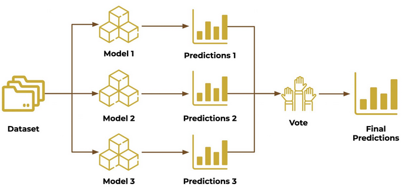
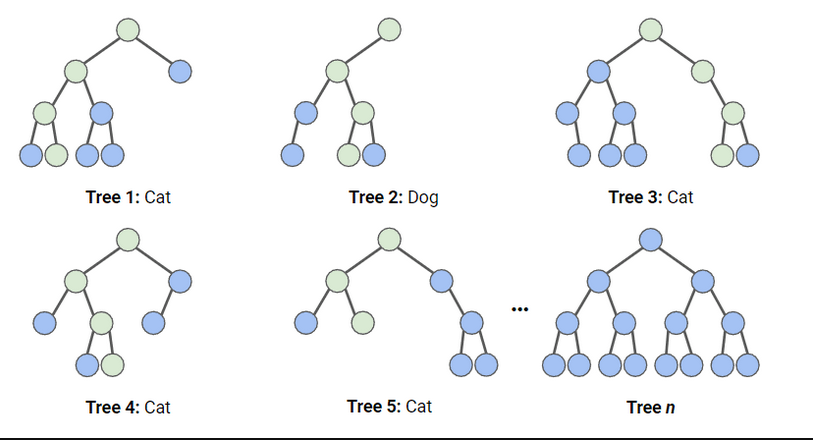
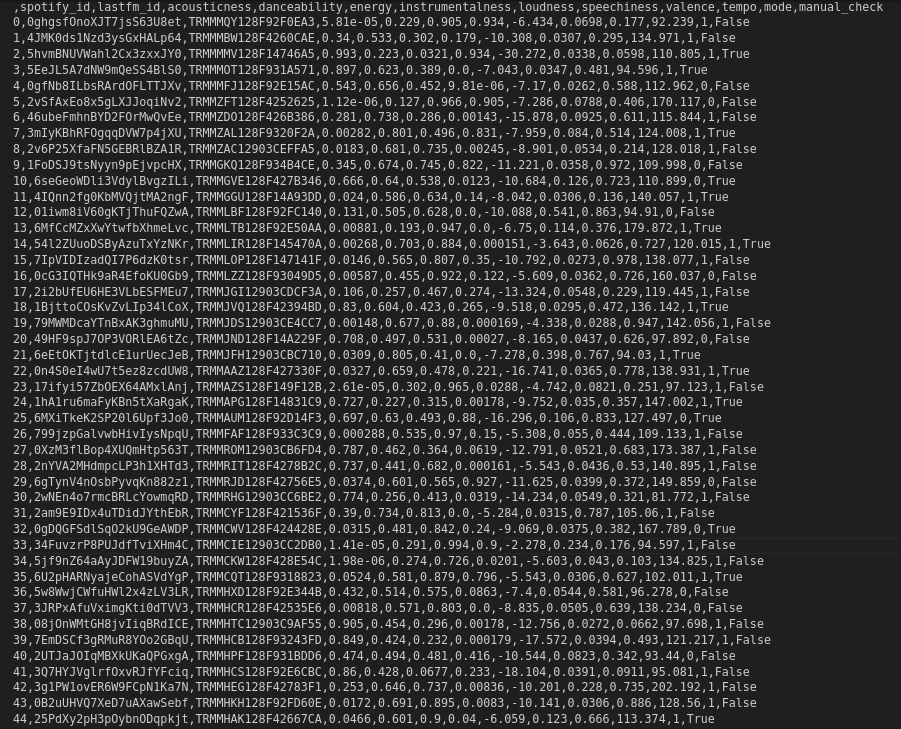
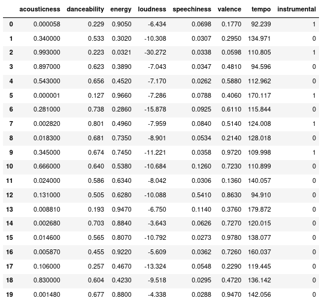
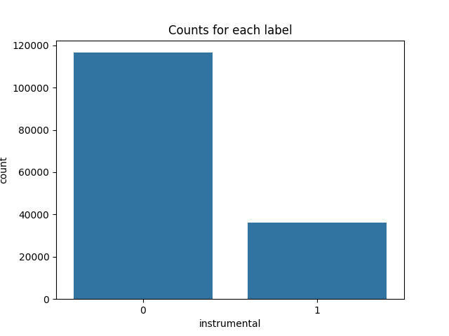
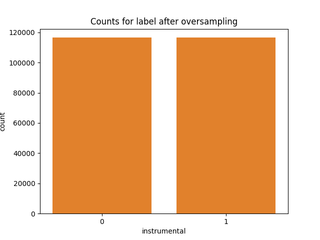
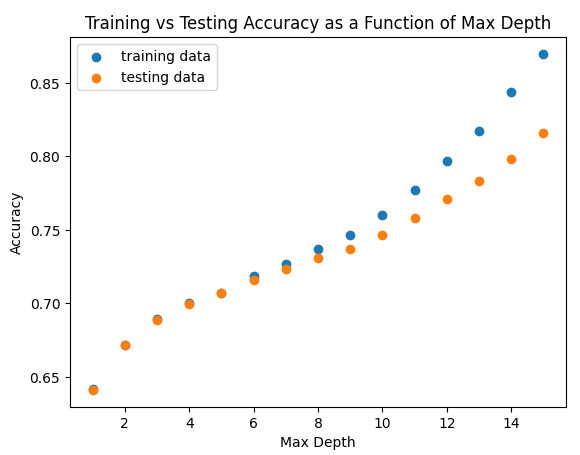
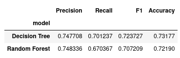

Ensemble Learning
Image from inside-machinelearning.com
The various machine learning models (logistic regression, Naive Bayes, decision trees, SVM) all perform with varying degrees of success. Some predict a data point correctly, others predict it incorrectly. Imagine for a moment that on a set of data, there were 5 different models trained. 4 our of the 5 predict class A while the last predicts class B. We can be fairly confident that the prediction should be class A because that is what the majority of the models said. This is the essence of ensemble learning: several models put together in varying ways so that together they can produce better predictions than normal.
Random Forest
A classic example of an ensemble method is the random forest algorithm. The name random forest alludes to the ensemble members: a large group of decision trees. Traditionally, these trees are shallow, having sometimes only having a max depth of 1, or in other words only having a root node.
Random Forest Versus Decision Tree
All code can be found here and all data here.
The current spotify data looks like this:

The value that we are going to try and predict with a decision tree is whether or not a song is instrumental.
The spotify API states that an instrumentalness score of below 0.5 is likely not instrumental, while a score of above 0.5 is. After dropping unnecessary columns and creating the label, the data looks like this:

For supervised learning, we need labeled data to train the model. The label for this data is "instrumental". So we will first separate the actual data from the label. The image on the left is the data, while the image on the right is the label vector.
It is important in supervised learning to have equal numbers of each class, but for this data that is not the case as shown below: 
While there are several ways to potentially fix this issue, one method is to use what is known as oversampling. This in essence randomly duplicates samples from the minority class (in this case 1) so that the cases are even. This can be accomplished with the python package imblearn and the included class RandomOverSampler. Doing so fixes the imbalance:

The data now needs to be split into a training set and a testing set. This disjoin split is important to be able to evaluate the model. If the model is evaluated on the same data it is trained on, it might perform great. But there is no way to know if it will generalize well to other data. Thus, it needs to perform well on data that it has not seen. The model is trained on the training set, and then the labels of the testing set are predicted. The model is then evaluated by comparing the predicted labels to the actual labels. Splitting data into a training and testing set is easily accomplished with scikit learn's train__test_split method. See the images below. From left to right and going down, they are training data, testing data, training labels, and testing labels. Notice the larger size of the training data. 75% of the data is randomly assigned as training data, and 25% of the data is randomly assigned as testing data.
In building the random forest model, we can algorithmically pick a value for the max depth to ensure we are not over fitting the data. The random forest algorithm was trained as various max depths. Following this, we test the model on both the testing data and the training data. Where the accuracies start to pull away is where the model begins to overfit. 
Using a max depth of 7 seems to be a sweet spot. The same analysis was performed on a decision tree here.
The table and confusion matrices below show the results of each method. 

In this case, the decision tree performs slightly better, but not by much. While ensemble methods generally do perform better, this shows that they do not always perform better. In this instance, the decision tree is clearly the better model to use not only for the slightly improved accuracy, but it has a much lower complexity. If two models produce the same or near the same results, it is always worth it to use the less complex model. Pertaining to the larger questions at hand, it seems that whether or not a song is instrumental can be predicted by the other spotify attributes. Thus it means that to a degree, there are discernable acoustic features other than the presence of a voice that are more common in instrumental music and vice versa.